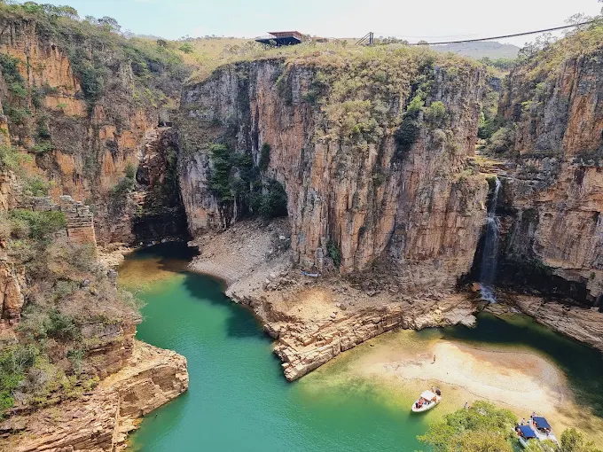
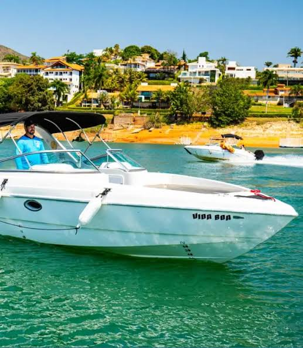
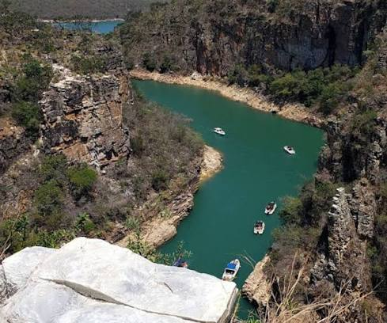

Capitólio
Capitólio: é um município brasileiro no sudoeste de Minas Gerais, famoso pelo turismo de natureza e pelo imenso Lago de Furnas

As Atrações Imperdíveis
Passeio de lanchas


Vista do Mirante dos Canyons, em Capitólio - MG.